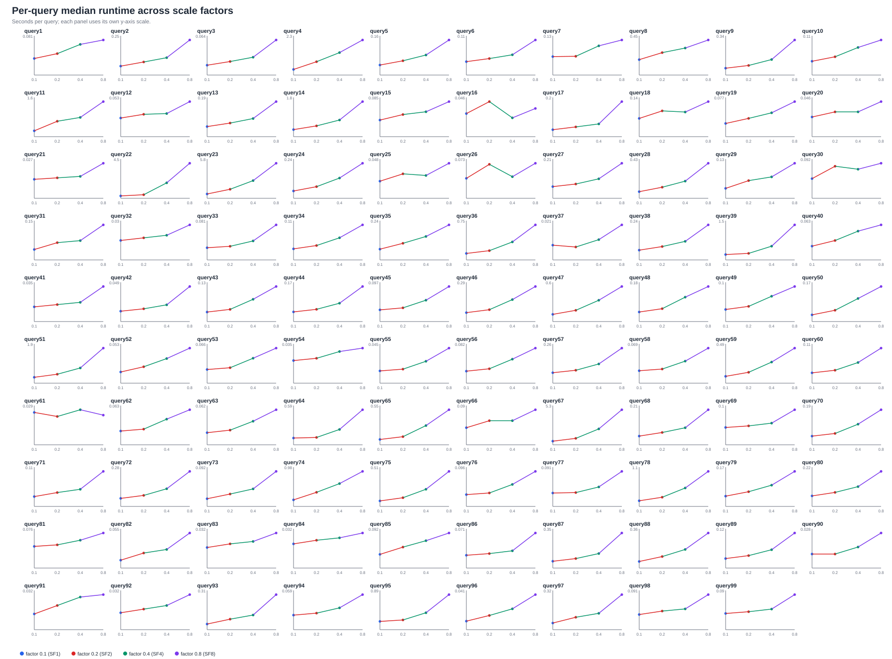
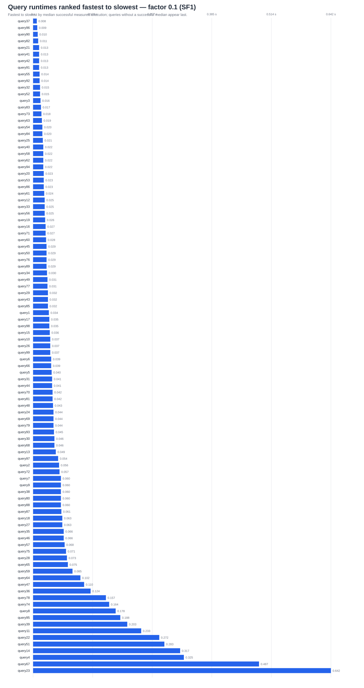
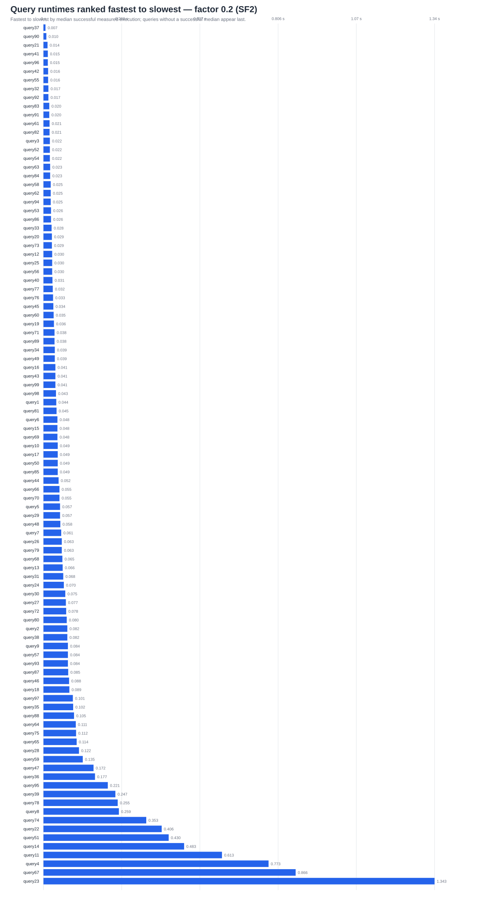
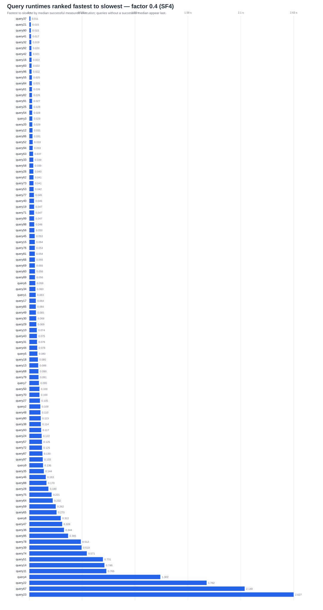
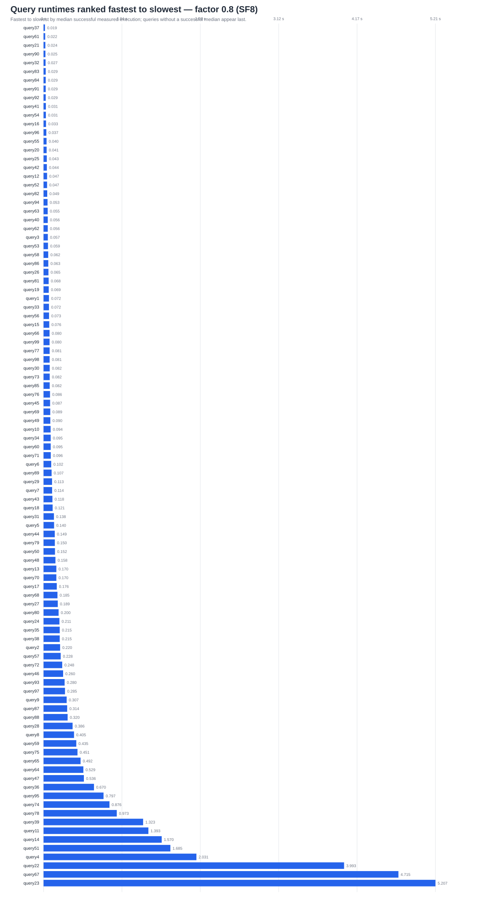
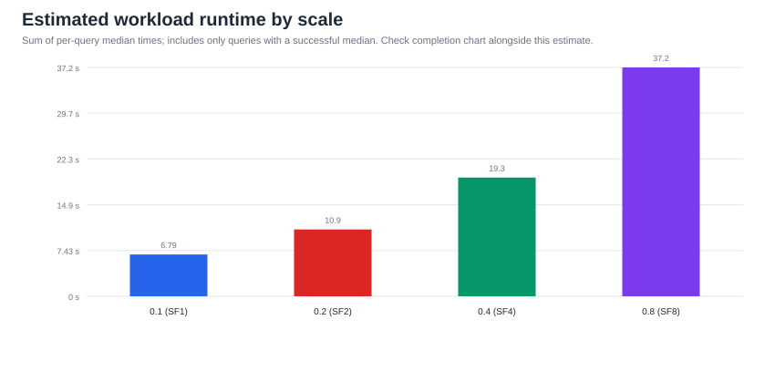
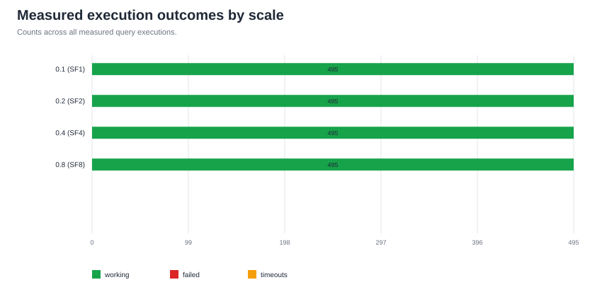

Factors: 0.1 (SF1), 0.2 (SF2), 0.4 (SF4), 0.8 (SF8). Per-query charts show medians from successful measured executions. Each panel in the query grid has its own y-axis, so compare trends within a query; use ranked charts for absolute time comparisons. The workload total is the sum of query medians and excludes queries with no successful median. Review execution outcomes before interpreting that total.







Exact per-query rankings are in ranked_queries.csv.